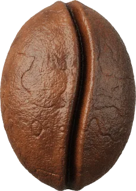
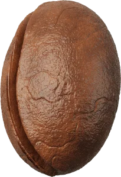
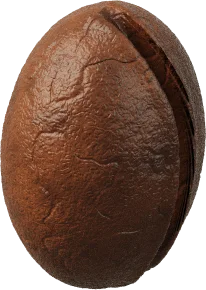
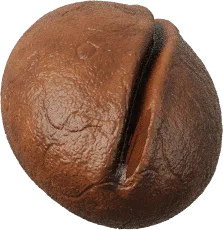
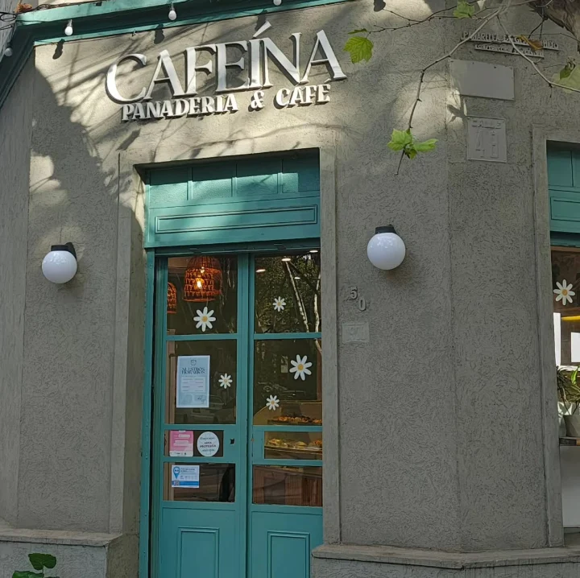
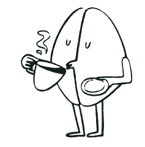

| Lunes a viernes | 8:00 a 19:00 |
|---|---|
| Sábados | 8:00 a 19:00 |
| Domingos | Cerrado |




Un café, un desayuno o una merienda con cosas ricas de panadería y pastelería, en San Martín.
| Lunes a viernes | 8:00 a 19:00 |
|---|---|
| Sábados | 8:00 a 19:00 |
| Domingos | Cerrado |

Moreno 4108San Martín
Cómo llegar